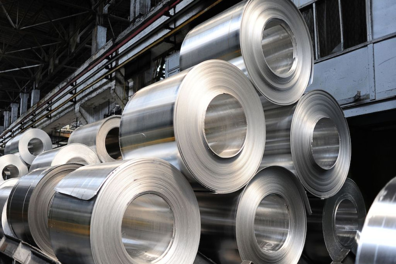
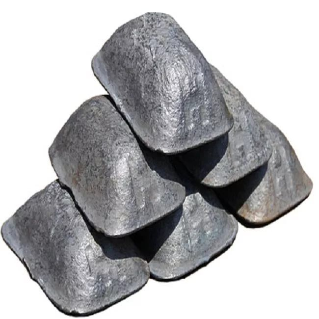
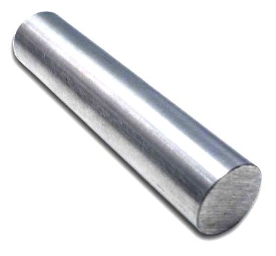
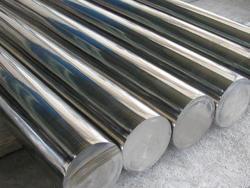

Сталь это не просто сталь, это смесь железа и углерода с не менее 45% железа и углерода в диапазоне от 0,02 до 2,14 %.
Однако если добавлять в сталь другие металлы или измеять соотношение углерода и железа мы будем получать другие
виды стали с разными совйствами. Например содержание углерода сильно влияет на технические характеристики.
Чем больше его в сплаве, тем тверже и более хрупок материал. Увеличение концентрации углерода приводит к снижению
способности стали к деформации в горячем и холодном состояниях.
Различных сплавов стали существует более 3500 и эти сплавы делятся по химическому составу на углеродистые и легированные.
Углеродистые стали применяют в эксплуатационных условиях, легированные используют при высоких температурах и в агрессивных средах.
Обычная сталь бывает:

Чугун:

| Тип чугуна | Состав и особенности | Применение |
|---|---|---|
| Серый чугун | 2,5–4% углерода в виде графита (пластинчатая форма). Хрупкий, но хорошо обрабатывается. | Корпусы станков, трубы, блоки цилиндров, сковороды. |
| Белый чугун | Углерод в виде цементита (Fe3C). Твёрдый, но очень хрупкий. | Износостойкие детали (шары мельниц, лопатки дробилок). |
| Ковкий чугун | Получают отжигом белого чугуна. Графит в хлопьевидной форме — более пластичный. | Автозапчасти (ступицы, скобы), сельхозтехника. |
| Высокопрочный чугун (чугун с шаровидным графитом) | Графит в сферической форме (добавки магния, церия). Прочнее серого чугуна. | Трубы, коленвалы, детали насосов, строительные конструкции. |
| Легированный чугун | С добавками хрома, никеля, меди для улучшения свойств (жаростойкость, коррозионная стойкость). | Клапаны, турбинные лопатки, химическое оборудование. |


Хромоникелевая сталь
| Тип стали | Состав и особенности | Применение |
|---|---|---|
| Углеродистая сталь | Железо + углерод (до 2,1%). Бывает низко-, средне- и высокоуглеродистой. | Строительство, инструменты, детали машин. |
| Легированная сталь | Добавки (хром, никель, молибден и др.) для улучшения свойств. | Автомобили, авиация, промышленное оборудование. |
| Нержавеющая сталь | Хром (≥10,5%) обеспечивает коррозионную стойкость. | Медицина, кухонная утварь, химическая промышленность. |
| Инструментальная сталь | Высокая твёрдость и износостойкость (с добавками вольфрама, ванадия). | Сверла, резцы, штампы, режущие инструменты. |
| Конструкционная сталь | Прочность и пластичность, часто с низким содержанием углерода. | Мосты, здания, каркасы сооружений. |